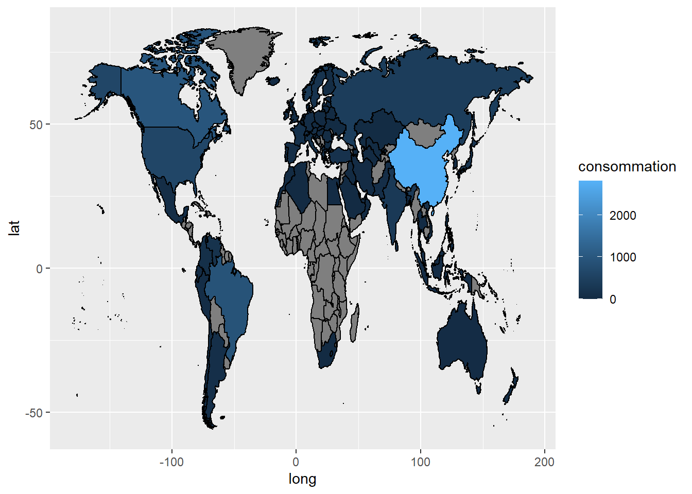
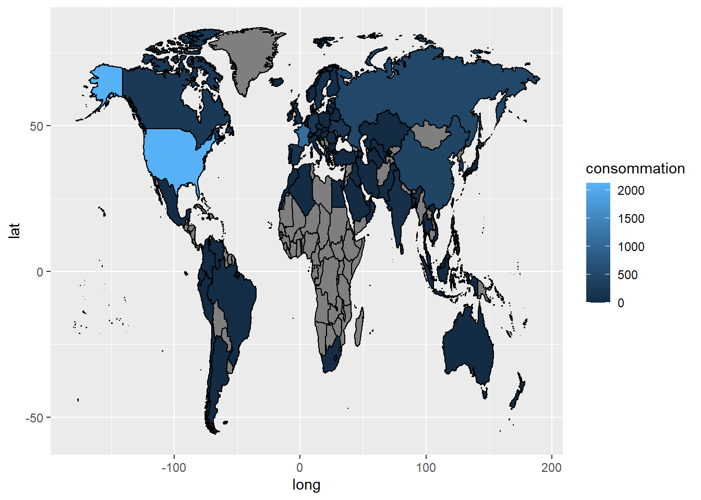
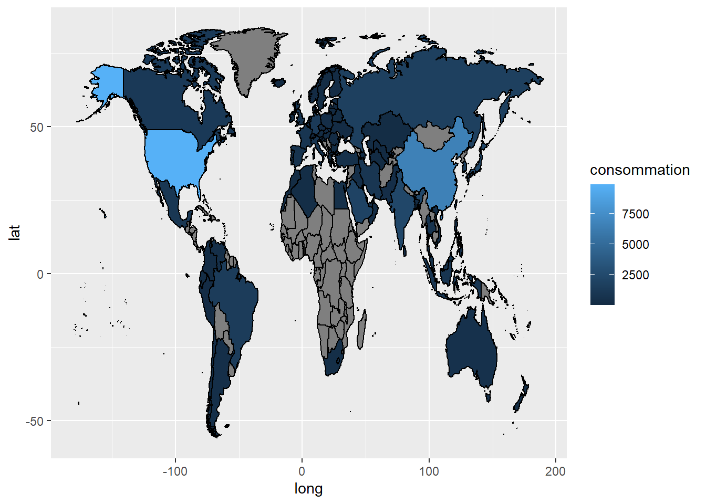
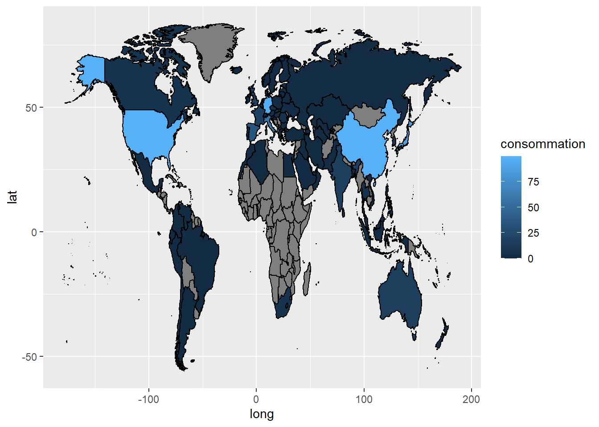

#source = biofuel ggplot(energy_carte |> filter(annee==2015) |> filter(sources_energy =="biofuel"))+ aes(long,lat,group=group)+ geom_polygon(aes(fill=consommation),colour="black")

#source = coal ggplot(energy_carte |> filter(annee==2015) |> filter(sources_energy =="coal"))+ aes(long,lat,group=group)+ geom_polygon(aes(fill=consommation),colour="black")

#source = gas ggplot(energy_carte |> filter(annee==2015) |> filter(sources_energy =="gas"))+ aes(long,lat,group=group)+ geom_polygon(aes(fill=consommation),colour="black")

#source = hydro ggplot(energy_carte |> filter(annee==2015) |> filter(sources_energy =="hydro"))+ aes(long,lat,group=group)+ geom_polygon(aes(fill=consommation),colour="black")
